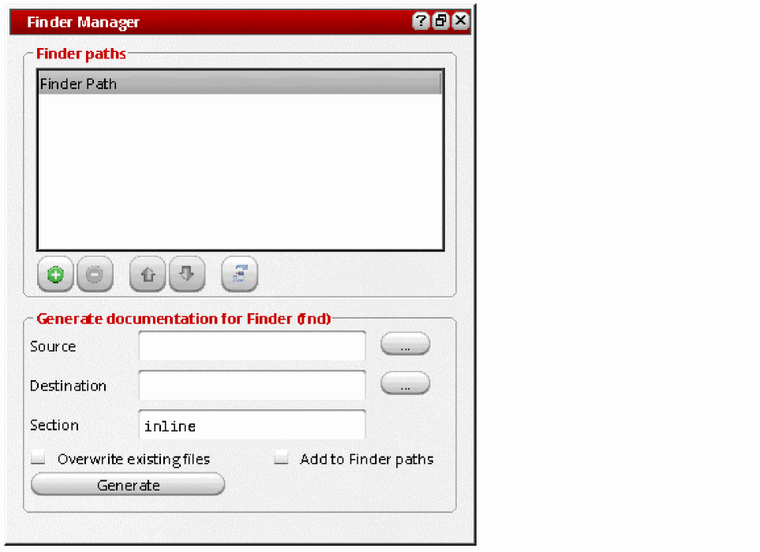
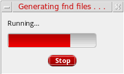

Extracting Documentation using Finder Manager
After you add inline documentation strings in your SKILL/SKILL++ source files, you are ready to generate finder-compatible documentation using Finder Manager. Finder Manager processes the code blocks containing inline documentation strings and saves the output in a finder (.fnd) file.
To create a finder file from your source file:
-
Start the Finder assistant by choosing Window – Assistants – Finder. The Finder assistant displays.

-
Click
 (Finder Manager) in the Finder assistant toolbar. The Finder Manager window displays.
(Finder Manager) in the Finder assistant toolbar. The Finder Manager window displays.
 -
In the Finder paths section, specify additional directories for Finder database files. When you launch the Finder assistant, Finder will look for finder database files (
*.fnd) under these directories.- Click Add Finder Path ( ) to add a new directory path in the Finder paths section. A directory path can be added only once.
- Click Remove selected path from the path list ( ) to remove the selected directory path from the Finder paths section.
- Click Move path up in the list ( ) or Move path down in the list ( ) to move a directory path up or down the list. Moving a directory path up or down the list changes the order in which Finder will search the finder database files.
If a directory path listed in the Finder paths section is long and appears truncated, you can hover the mouse pointer over the path to view the full path in a tooltip.
The finder database reloads every time you add or remove a directory path, or move it up or down the list. -
In the Generate documentation for Finder (fnd) section, specify the required source and destination information:
-
In the Source field, browse or type the name of the directory that has the source files containing inline documentation strings.
Finder Manager looks only for files with the extension .il/.ils. If the specified directory path does not contain any .il/.ilsfile, the documentation will not be generated. -
In the Destination field, specify the directory path under which you want to save the generated finder (.
fnd) file. -
In the Section field, specify a section name for the generated finder (.
fnd) file. The default name isinline, which means the finder (.fnd) file will be created under a directory namedinlineunder your destination directory.
Your finder (.fnd) file will be created two directory levels below the path you specify in the Destination field. For example, if your source file is namedinline.iland you specify the following information in the Destination and Section fields:
Destination:/home/user/skillide
Section:inline_doc
A file namedinline.fndwill be created under:/home/user/skillide/SKILL/inline_doc/
-
In the Source field, browse or type the name of the directory that has the source files containing inline documentation strings.
-
Select the Overwrite existing files check box to overwrite any existing finder (.
fnd) file in the destination path. -
Select the Add to Finder paths check box to add the path of the generated finder (.
fnd) file in the$CDS_FINDER_PATHenvironment variable. Finder loads its data from the paths specified in this environment variable. -
Click Generate to generate the finder (.
fnd) file. The Generating fnd files progress box displays.
After the file generation process completes, you can check the generated finder (.fnd) file under the directory path specified in the Generate documentation for finder (fnd) section.
You can also use a corresponding SKILL script, genFndFiles.il, which is located at tools/dfII/samples/skill/ in your Virtuoso installation directory.
The syntax to run it is as follows:
genFndFiles.il -ddirectory_with_SKILL_files-ooutput_directory-vlog_file
genFndFiles.il -d .fnd/source -o .fnd/output -v .fnd/log.txt
Related Topics
Viewing the Generated Documentation in Finder
Specifying Additional Finder Data Directories
Return to top